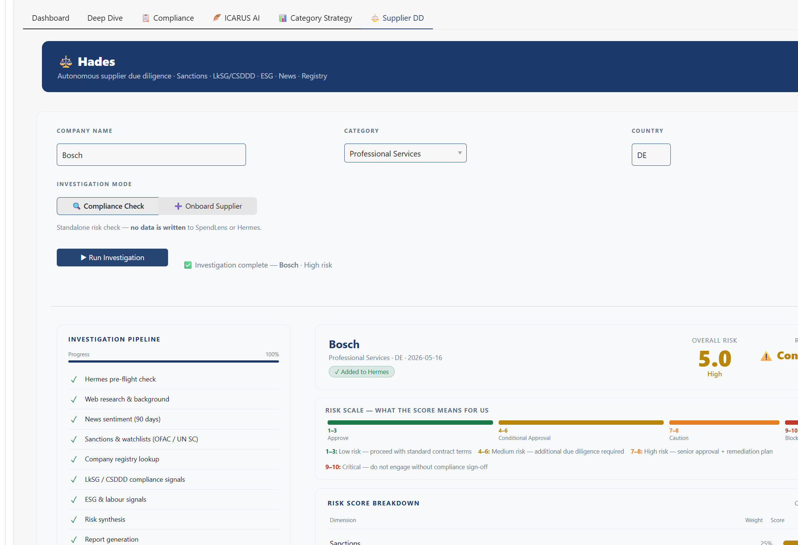

Hades
An autonomous supplier due-diligence agent. Six research nodes check sanctions (OFAC, UN), the company registry, LkSG and CSDDD signals, ESG and labour risk, news sentiment and Hermes market intelligence. Claude scores each dimension from 1 to 10; tested deterministic code turns those scores into the verdict.
The live agent is paused since November 2026. Below: a real investigation from May 2026, and the decision logic itself, running in your browser.

The model advises, the code decides
Set the six dimension scores the model would return and the hard facts the research nodes found. The
weighted score, the risk band, the recommendation and every override come from a direct port of
agent/scoring.py,
checked against the Python original on 20,000 random inputs. The example inputs are illustrations, not real companies.
Code, tests and the research nodes: github.com/eugnmueller-87/hades